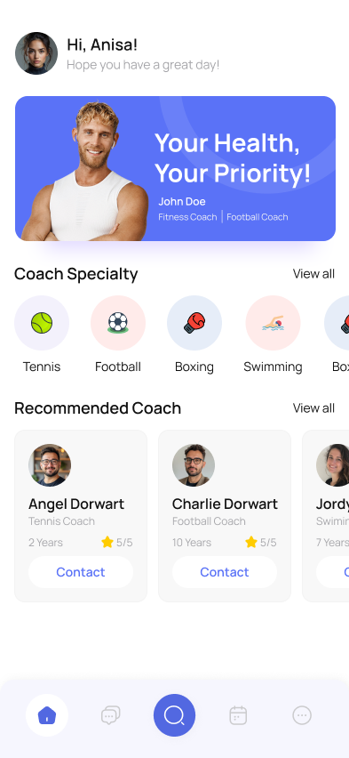
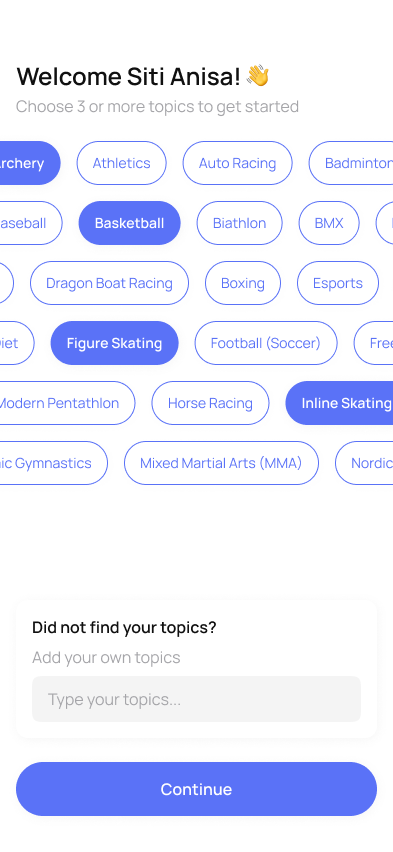

Cari Jurulatih Sukan Terbaik di Kuala Lumpur
Kami mengubah cara atlet berhubung dengan jurulatih di Kuala Lumpur. Daftar untuk akses awal. Jurulatih dalam senarai tunggu mendapat percubaan percuma 3 bulan semasa pelancaran.
Tentang Kami
Menghubungkan atlet dengan jurulatih di Kuala Lumpur.
Find My Coach ialah platform sukan berasaskan Kuala Lumpur yang menghubungkan atlet dengan jurulatih bebas melalui aplikasi mudah alih. Kami membantu atlet mencari jurulatih tempatan dipercayai dengan ulasan telus dan tempahan mudah, sambil memberi jurulatih visibiliti, kawalan, dan kebebasan tanpa kontrak atau yuran komisen.
Misi kami adalah menjadikan kejurulatihan berkualiti lebih mudah diakses dan menyokong pertumbuhan komuniti sukan tempatan. Kami melancarkan di Kuala Lumpur dengan tenis, badminton, renang, dan padel, kemudian mengembangkan lebih banyak sukan berdasarkan permintaan.
Sukan Pelancaran
Bermula di Kuala Lumpur
Kami fokus pada kualiti pada pelancaran, lebih banyak sukan akan ditambah apabila komuniti berkembang.
Tenis
Kejurulatihan peribadi & berkumpulan
Badminton
Semua peringkat kemahiran dialu alukan
Renang
Teknik & daya tahan
Padel
Kejurulatihan peribadi & berkumpulan
Bola keranjang, bola sepak, dan lain lain. beritahu sukan anda di senarai tunggu. Adakah anda jurulatih? Sertai sebagai jurulatih di KL.

Kepimpinan
Kenali pengasas.
Mikolaj Gross, CEO & Founder
Find My Coach bermula daripada idea mudah: memudahkan atlet di Kuala Lumpur mencari jurulatih berkualiti dipercayai, sambil memberi jurulatih kebebasan mengembangkan perniagaan mengikut terma sendiri. Diasaskan oleh Mikołaj, pemain tenis dan bola sepak yang bersemangat, platform ini diilhamkan oleh cabarannya sendiri mencari jurulatih berpengalaman. Melalui Find My Coach, beliau bina komuniti atlet dan jurulatih yang berkongsi cita-cita untuk berkembang, bersaing, dan berprestasi tinggi.
Hubung di LinkedInCara Ia Berfungsi
Mulakan kejurulatihan mengikut terma anda: cipta profil, ditemui atlet tempatan, dan urus tempahan di satu tempat.
Cipta Profil Anda
Sediakan profil kejurulatihan dengan sukan, pengalaman, kadar, dan ketersediaan anda.
Ditemui Atlet
Atlet berdekatan menemui anda melalui carian, penapis, dan ulasan. Tiada pemasaran tambahan diperlukan.
Urus Tempahan
Terima permintaan, urus jadual, dan berbual dengan atlet dari satu platform.
Cari jurulatih yang sesuai, tempah sesi, dan mula berlatih dari telefon anda.
Layari Jurulatih
Cari mengikut sukan, lokasi, dan pengalaman. Baca ulasan dan banding gaya kejurulatihan.
Pilih Jurulatih Anda
Lihat profil terperinci dengan kadar, kelayakan, dan ketersediaan, kemudian pilih yang paling sesuai.
Tempah & Berlatih
Tempah sesi, segerakkan ke kalendar, dan mesej jurulatih anda dalam aplikasi.
Sekilas Pandang
Lihat aplikasi dalam tindakan.
Temui jurulatih, pilih sukan anda, layari profil, dan mula sama ada anda berlatih atau melatih.




Mengapa Pilih Kami
Dibina untuk kedua dua belah gelanggang.
Find My Coach direka untuk melayani atlet dan jurulatih secara saksama tanpa komisen, tanpa halangan, hanya hubungan yang lebih baik.
Sertai Senarai TungguUntuk Atlet
- Jurulatih disahkan & dipercayai tempatan
- Ulasan & penilaian atlet sebenar
- Banding harga & kepakaran dengan pantas
- Tempah dan bayar dalam saat
- Segerakkan sesi ke kalendar
- Mesej jurulatih anda dalam aplikasi
Untuk Jurulatih
- Ditemui atlet berdekatan
- 0% komisen, tiada kontrak
- Tetapkan kadar & jadual sendiri
- Tempahan & kalendar terbina
- Sembang langsung dengan atlet
- Bina reputasi melalui ulasan
Untuk Jurulatih
Isi jadual anda. Simpan setiap ringgit.
Sertai sebagai jurulatih awal dan ditemui atlet di Kuala Lumpur. Jurulatih senarai tunggu mendapat percubaan percuma 3 bulan semasa pelancaran. Tiada komisen, tiada kontrak, hanya keahlian bulanan mudah.
Ada Soalan?
Jawapan pantas.
Ada soalan lain? Hubungi kami dan kami gembira membantu.
Find My Coach ialah aplikasi mudah alih yang menghubungkan atlet dengan jurulatih sukan profesional. Sama ada tenis, renang, badminton, atau sukan lain, anda boleh layari profil, banding kadar, baca ulasan, dan tempah sesi dengan segera.
Kami sasaran pelancaran menjelang hujung tahun 2026. Sertai senarai tunggu untuk dimaklumkan apabila kami dilancarkan!
Kami melancarkan di Kuala Lumpur dengan tenis, badminton, renang, dan padel dahulu. Bola keranjang, bola sepak, dan lain lain mengikut permintaan. Beritahu sukan anda di senarai tunggu!
Jurulatih bayar keahlian bulanan dari RM 30 dengan 0% komisen. Atlet layari dan tempah percuma. Jurulatih dalam senarai tunggu mendapat percubaan percuma 3 bulan semasa pelancaran.
Jurulatih boleh sertai senarai tunggu sekarang untuk akses awal. Anda boleh cipta profil, tetapkan kadar dan ketersediaan, dan mula ditemui atlet, tanpa yuran komisen.
Klik mana mana butang "Sertai senarai tunggu", hanya seminit. Selepas hantar, anda akan ke halaman pengesahan dengan langkah seterusnya.
Pelan Hala Tuju
Garis masa pelancaran
Di sinilah kami sekarang dan apa yang seterusnya.
Senarai tunggu dibuka
Daftar untuk akses awal dan bantu bentuk aplikasi.
Pelancaran beta
Jurulatih & atlet awal dapat akses pertama di KL.
Pelancaran awam
Pelancaran penuh di iOS & Android di Kuala Lumpur.
Dapatkan akses awal.
Jadilah antara yang pertama mencari jurulatih (atau isi jadual anda). Jurulatih dalam senarai tunggu mendapat percubaan percuma 3 bulan semasa pelancaran.
Hanya mengambil masa seminit. Anda akan dialihkan ke halaman pengesahan selepas hantar.
Hubungi Kami
Hubungi kami.
Soalan, perkongsian, atau maklum balas? Kami ingin mendengar daripada anda.